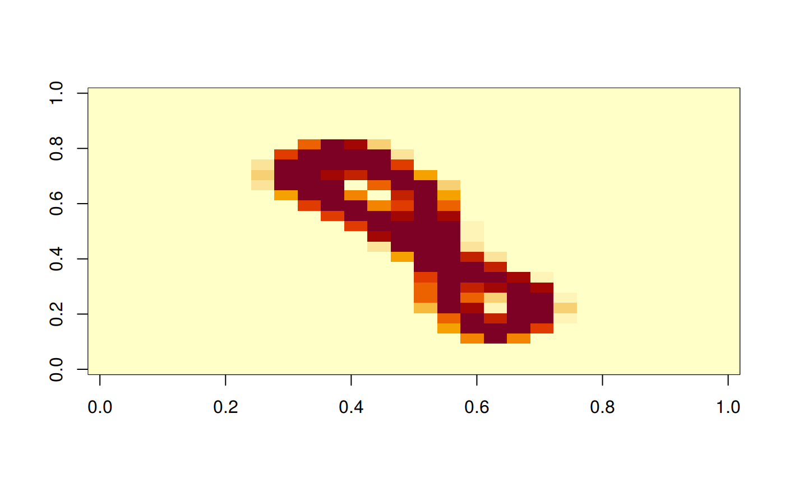
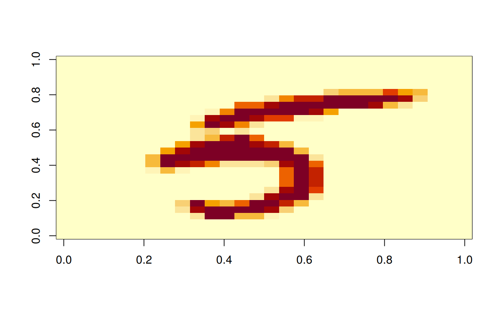
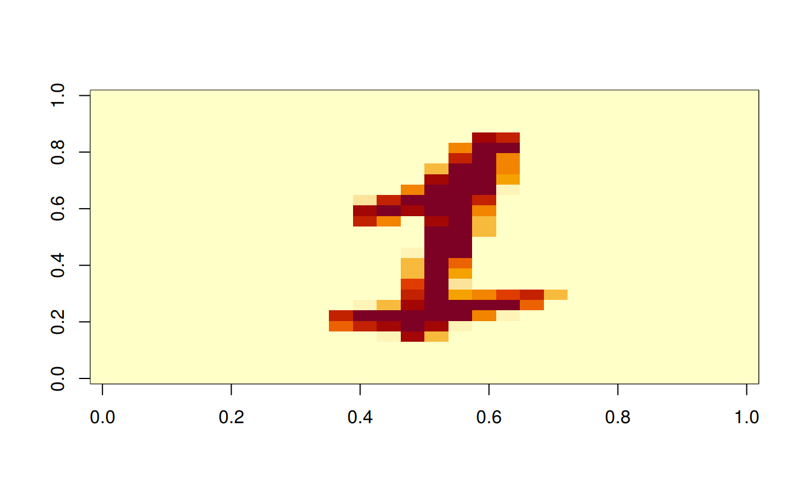

# read the datasets without normalization
train_dataset = torchvision$datasets$ImageFolder(root = train_data_path,
transform = torchvision$transforms$ToTensor()
)
test_dataset = torchvision$datasets$ImageFolder(root = test_data_path,
transform = torchvision$transforms$ToTensor()
)
cat(py_len(train_dataset), py_len(test_dataset), "\n")
#> 60000 10000
train_dataset$`__len__`()
#> [1] 60000
class(train_dataset) # <class 'torchvision.datasets.folder.ImageFolder'>
#> [1] "torchvision.datasets.folder.ImageFolder"
#> [2] "torchvision.datasets.folder.DatasetFolder"
#> [3] "torchvision.datasets.vision.VisionDataset"
#> [4] "torch.utils.data.dataset.Dataset"
#> [5] "python.builtin.object"
# in Python train_dataset[0] is a tuple
# In R, this will produce an error
# expect_error(class(train_dataset[0])) # <class 'tuple'>
train_dataset
#> Dataset ImageFolder
#> Number of datapoints: 60000
#> Root location: /home/msfz751/mnist_png_full/training/
# Dataset ImageFolder
# Number of datapoints: 60000
# Root location: /home/msfz751/mnist_png_full/training/# retrieve a random data point from the dataset
random <- import("random")
i_rand = random$randrange(0, py_len(train_dataset)-1)
i_rand
#> [1] 48597
# the Python object is a tuple with two elements
# But in R returns as a list of two elements
dataset_object = py_get_item(train_dataset, i_rand)
dataset_object
#> [[1]]
#> tensor([[[0., 0., 0., ..., 0., 0., 0.],
#> [0., 0., 0., ..., 0., 0., 0.],
#> [0., 0., 0., ..., 0., 0., 0.],
#> ...,
#> [0., 0., 0., ..., 0., 0., 0.],
#> [0., 0., 0., ..., 0., 0., 0.],
#> [0., 0., 0., ..., 0., 0., 0.]],
#>
#> [[0., 0., 0., ..., 0., 0., 0.],
#> [0., 0., 0., ..., 0., 0., 0.],
#> [0., 0., 0., ..., 0., 0., 0.],
#> ...,
#> [0., 0., 0., ..., 0., 0., 0.],
#> [0., 0., 0., ..., 0., 0., 0.],
#> [0., 0., 0., ..., 0., 0., 0.]],
#>
#> [[0., 0., 0., ..., 0., 0., 0.],
#> [0., 0., 0., ..., 0., 0., 0.],
#> [0., 0., 0., ..., 0., 0., 0.],
#> ...,
#> [0., 0., 0., ..., 0., 0., 0.],
#> [0., 0., 0., ..., 0., 0., 0.],
#> [0., 0., 0., ..., 0., 0., 0.]]])
#>
#> [[2]]
#> [1] 8
class(dataset_object)
#> [1] "list"
length(dataset_object)
#> [1] 2
image <- dataset_object[[1]]
label <- dataset_object[[2]]The size of the image tensor is torch.Size([3, 28, 28]) but it should really be torch.Size([1, 28, 28]).
builtins$type(py_get_item(train_dataset, 0L))
#> <class 'list'>
print("\tfirst member of the tuple is a tensor for the image")
#> [1] "\tfirst member of the tuple is a tensor for the image"
builtins$type(py_get_item(train_dataset, 0L)[[1]])
#> <class 'torch.Tensor'>
print("\tsecond member of the tuple is an integer for the label")
#> [1] "\tsecond member of the tuple is an integer for the label"
builtins$type(py_get_item(train_dataset, 0L)[[2]])
#> <class 'int'># check size of first and last data point tensor, image part
py_get_item(train_dataset, 0L)[[1]]$size() # first object
#> torch.Size([3, 28, 28])
py_get_item(train_dataset, 59999L)[[1]]$size() # last object
#> torch.Size([3, 28, 28])
image$size()
#> torch.Size([3, 28, 28])
# it is torch.Size([3, 28, 28]) but it should be 1, 28, 28
# we will take only one slice of dim=1The tensors on dim=2 seem to be identical. We will confirm in the following chunk:
# dim=2 has three layers. choose only one
# but find out if all of them are the same
image[0, :, :].size() # take only one slice in dim=2
image[1, :, :].size() # take only one slice in dim=2
image[2, :, :].size() # take only one slice in dim=2
# same value for sums of the tensors means that all tensors are virtually the same
image[0, :, :].sum() # take only one slice in dim=2
image[1, :, :].sum() # take only one slice in dim=2
image[2, :, :].sum() # take only one slice in dim=2# select one layer of the tensor. 28x28 is the grid space
# take a slice 0:1 but could have been 1:2 or 2:3
image[0:1, :, :].size()
image[0:1, :, :].numpy().shaperotate <- function(x) t(apply(x, 2, rev)) # function to rotate the matrix
# the label for the corresponding tensor
print(label)
#> [1] 8
# convert to numpy array and reshape
img_np_rs = np$reshape(image[1,,]$numpy(), c(28L, 28L))
image(rotate(img_np_rs))
# second random data point
i_rand = random$randrange(0, py_len(train_dataset)-1) # get a random data point
dataset_object = py_get_item(train_dataset, i_rand) # read the tuple
image <- dataset_object[[1]]
label <- dataset_object[[2]]
# the label for the corresponding tensor
print(label)
#> [1] 3
# convert to numpy array and reshape
img_np_rs = np$reshape(image[1,,]$numpy(), c(28L, 28L))
image(rotate(img_np_rs))
# this class to be used to get rid of two duplicate layers in the image
main <- py_run_string('
class PickLayerTransform:
def __init__(self, layer):
# self.img_ds = img
self.layer = layer
if self.layer < 0: raise RuntimeError("Layer index {} cannot be negative ".format(self.layer))
def __call__(self, img):
if (self.layer > len(img)-1): raise RuntimeError("Layer index {} incompatible with dimension size {}".format(self.layer, len(img)))
return img[(self.layer-1):self.layer, :, :]
')
PickLayerTransform <- main$PickLayerTransform
# trying to resize tensor to [1, 28, 28]
train_dataset = torchvision$datasets$ImageFolder(root = train_data_path,
transform = torchvision$transforms$Compose(c(
transforms$ToTensor(),
PickLayerTransform(1L)
)))
test_dataset = torchvision$datasets$ImageFolder(root = test_data_path,
transform = torchvision$transforms$Compose(c(
transforms$ToTensor(),
PickLayerTransform(1L)
)))# check size of a data point tensor, image part
# train_dataset[0][0].size() # first object
# train_dataset[59999][0].size() # last object
py_get_item(train_dataset, 0L)[[1]]$size()
#> torch.Size([1, 28, 28])
py_get_item(train_dataset, 59999L)[[1]]$size()
#> torch.Size([1, 28, 28])
# this image generated before eliminating 2 extra layers
print("previous image size")
#> [1] "previous image size"
image$size()
#> torch.Size([3, 28, 28])
# it is torch.Size([3, 28, 28]) but it should be 1, 28, 28
# we will take only one slice of dim=1
# the other two layers are the samei_rand = random$randrange(0, py_len(train_dataset)-1) # get a random data point
dataset_object <- py_get_item(train_dataset, i_rand) # read the tuple
image <- dataset_object[[1]]
label <- dataset_object[[2]]
image$size()
#> torch.Size([1, 28, 28])
class(label)
#> [1] "integer"
# the label for the corresponding tensor
print(label)
#> [1] 7
# convert to numpy array and reshape
# we don't need to specify the layer index anymore
# we can use this form:
# img_np_rs = img[:, :, :].numpy().reshape(28, 28) in Python
# or this:
img_np_rs = np$reshape(image$numpy(), c(28L, 28L))
image(rotate(img_np_rs))
To prevent losing features by using a simple for loop to iterate over the data. In particular, we are missing out on:
Batching the data
Shuffling the data
Load the data in parallel using multiprocessing workers.# load the dataset of images
train_loader = torch$utils$data$DataLoader(
train_dataset,
batch_size=batch_size_train,
shuffle=TRUE
)
# load the dataset of images
test_loader = torch$utils$data$DataLoader(
test_dataset,
batch_size=batch_size_test,
shuffle=TRUE
)
cat(py_len(train_loader), py_len(test_loader))
#> 600 10# Build the model
# Same as linear regression!
main <- py_run_string("
import torch.nn as nn
class LogisticRegressionModel(nn.Module):
def __init__(self, input_dim, output_dim):
super(LogisticRegressionModel, self).__init__()
self.linear = nn.Linear(input_dim, output_dim)
def forward(self, x):
out = self.linear(x)
return out
")
LogisticRegressionModel <- main$LogisticRegressionModel# feeding the model with 28x28 images
input_dim = 28L*28L
# classify digits 0-9 a total of 10 classes,
output_dim = 10L
# instantiate model
model = LogisticRegressionModel(input_dim, output_dim)
model
#> LogisticRegressionModel(
#> (linear): Linear(in_features=784, out_features=10, bias=True)
#> )### Instantiate Cross Entropy Loss class
# need Cross Entropy Loss to calculate loss before we backpropagation
criterion = nn$CrossEntropyLoss()
# calculate parameters' gradients and update
learning_rate = 0.001
### Instantiate Optimizer class
optimizer = torch$optim$SGD(model$parameters(), lr=learning_rate)
optimizer
#> SGD (
#> Parameter Group 0
#> dampening: 0
#> lr: 0.001
#> momentum: 0
#> nesterov: False
#> weight_decay: 0
#> )# Type of parameter object
print(model$parameters())
#> <generator object Module.parameters at 0x7fa0f60327c8>
model_parameters <- builtins$list(model$parameters())
# Length of parameters
print(builtins$len(model_parameters))
#> [1] 2
# FC 1 Parameters
print(builtins$list(model_parameters)[[1]]$size())
#> torch.Size([10, 784])
# FC 1 Bias Parameters
print(builtins$list(model_parameters)[[2]]$size())
#> torch.Size([10])We arbitrarily set 3000 iterations here which means the model would update 3000 times.
One epoch consists of 60,000 / 100 = 600 iterations. Because we would like to go through 3000 iterations, this implies we would have 3000 / 600 = 5 epochs as each epoch has 600 iterations.
# train the model
iter <- 0L
for (epoch in 1:num_epochs) {
iter_train_dataset <- builtins$enumerate(train_loader) # reset iterator
for (train_obj in iterate(iter_train_dataset)) {
# extract images, labels
images <- train_obj[[2]][[1]]
labels <- train_obj[[2]][[2]]
# Load images as Variable
images = images$view(-1L, 28L*28L)$requires_grad_()
labels = labels
# Clear gradients w.r.t. parameters
optimizer$zero_grad()
# Forward pass to get output/logits
# outputs = model(torch$as_tensor(images, dtype = torch$double))
outputs = model(images)
# Calculate Loss: softmax --> cross entropy loss
loss = criterion(outputs, labels)
# Getting gradients w.r.t. parameters
loss$backward()
# Updating parameters
optimizer$step()
iter = iter + 1
if (iter %% 500 == 0) {
# Calculate Accuracy for each epoch
correct <- 0
total <- 0
# Iterate through test dataset
iter_test_dataset <- builtins$enumerate(test_loader) # reset iterator
for (test_obj in iterate(iter_test_dataset)) {
# Load images to a Torch Variable
images <- test_obj[[2]][[1]]
labels <- test_obj[[2]][[2]]
images <- images$view(-1L, 28L*28L)$requires_grad_()
# Forward pass only to get logits/output
# outputs = model(torch$as_tensor(images, dtype = torch$double))
outputs = model(images)
# Get predictions from the maximum value
.predicted = torch$max(outputs$data, 1L)
predicted <- .predicted[1L]
# Total number of labels
total = total + labels$size(0L)
# Total correct predictions
correct = correct + sum((predicted$numpy() == labels$numpy()))
}
accuracy = 100 * correct / total
# Print Loss
cat(sprintf('Iteration: %5d. Loss: %f. Accuracy: %8.2f \n',
iter, loss$item(), accuracy))
}
}
}
#> Iteration: 500. Loss: 1.854970. Accuracy: 65.22
#> Iteration: 1000. Loss: 1.578890. Accuracy: 75.24
#> Iteration: 1500. Loss: 1.296880. Accuracy: 78.85
#> Iteration: 2000. Loss: 1.209047. Accuracy: 80.61
#> Iteration: 2500. Loss: 1.104562. Accuracy: 81.77
#> Iteration: 3000. Loss: 0.967193. Accuracy: 82.66This is a modified version of the original article.
Source: https://www.deeplearningwizard.com/deep_learning/practical_pytorch/pytorch_logistic_regression/